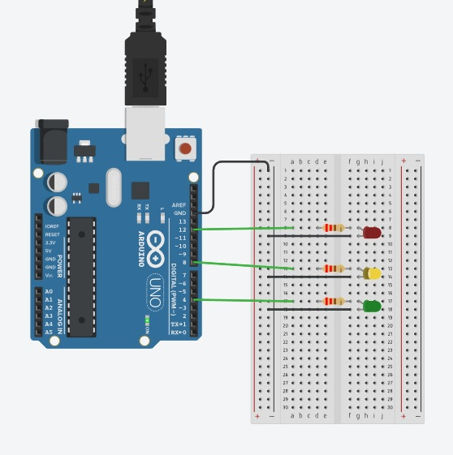
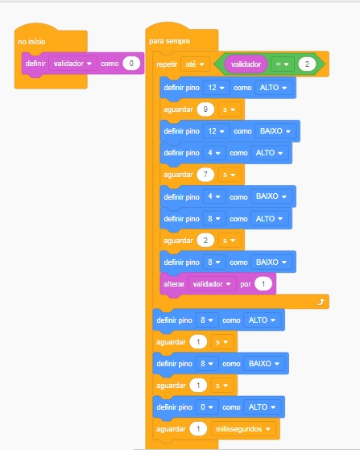

Imagem do circuito do projeto de semaforo simples
 Fonte: Tinkercad
Imagem da programação em diagrama de blocos do projeto acima
Fonte: Tinkercad
Código em texto
int validador = 0;
void setup()
{
pinMode(12, OUTPUT);
pinMode(4, OUTPUT);
pinMode(8, OUTPUT);
pinMode(0, OUTPUT);
validador = 0;
}
void loop()
{
while (!(validador == 2)) {
digitalWrite(12, HIGH);
delay(9000); // Wait for 9000 millisecond(s)
digitalWrite(12, LOW);
digitalWrite(4, HIGH);
delay(7000); // Wait for 7000 millisecond(s)
digitalWrite(4, LOW);
digitalWrite(8, HIGH);
delay(2000); // Wait for 2000 millisecond(s)
digitalWrite(8, LOW);
validador += 1;
}
digitalWrite(8, HIGH);
delay(1000); // Wait for 1000 millisecond(s)
digitalWrite(8, LOW);
delay(1000); // Wait for 1000 millisecond(s)
digitalWrite(0, HIGH);
delay(1); // Wait for 1 millisecond(s)
}